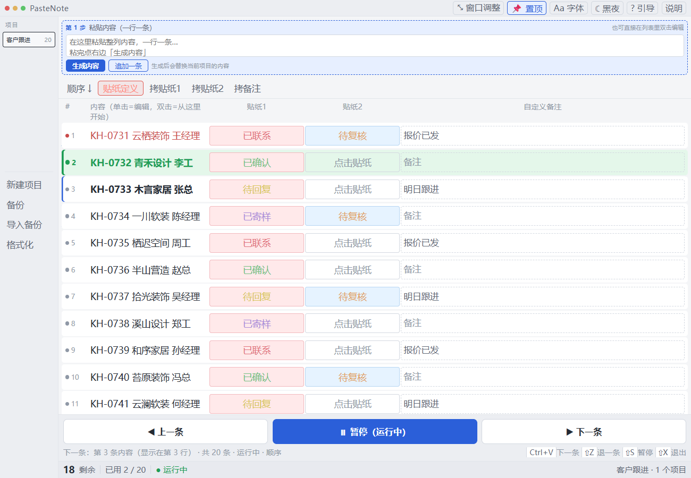
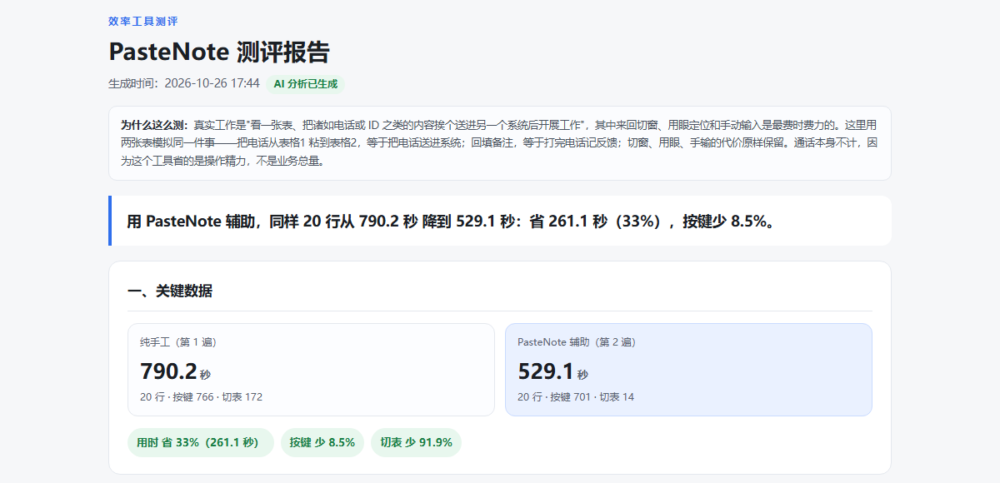

把一线的问题，
做成能验收的成品。
我做过三件事：一套 68㎡ 老房的改造交付，一个自己用的桌面工具，以及给这个工具做的一份对照评测。 行业各不相同，方法却是同一条——先把「怎么算做对了」写成能检查的标准，再动手，最后用数据回头验一遍。
三个项目
均可点开看细节与证明材料
天怡财富城 68㎡ 旧房改造
17 米进深的狭长老房，预算紧、要效果。15 张施工图出到工人能照图施工，预算拆成人工辅材 / 主材 / 外墙三张表，把「不确定」提前写进报价，而不是留给现场加钱。

PasteNote
把「复制 → 切窗 → 粘贴 → 备注」这条每天走几十遍的循环，压成按一次 Ctrl+V 取下一条。关键判断是「按键之前就把下一条装进剪贴板」，状态用枚举贴纸结构化，数据不出本机。

效率工具评测
给 PasteNote 做两遍对照：同一个人、同一批 20 行，一遍纯手工、一遍工具辅助，两边都计时、数按键、数切表。先证明数据可信，再谈它到底快在哪。

三个项目，一条方法
先把标准定死
图纸、报价、判卷口径，都是同一件事：把「做完了」翻译成别人也能照着检查的条件。标准写不清楚，后面所有的「感觉不错」都不算数。
再把它做出来
标准落到图纸上是 15 张图与三张预算表，落到工具上是一次按键就能取出下一条的剪贴板队列。做出来的东西要能被使用，而不是只能被展示。
最后回头验一遍
工程上是一次验收、零增项；工具上是同机同任务的两遍对照。验证不是证明我对，而是知道下一刀该切哪里——按键只降了 8.5%，就是这一刀的位置。
关于我
5 年一线业务经验：在支付宝做互联网保险规划与金融 AI 助手的一线落地，也在创业期自己开过装修公司、带过工程队。两类工作看着远，要求是同一种——把用户一句模糊的抱怨，拆成能执行、能验收的动作。
2026 年 10 月用 AI 编程工具独立完成 PasteNote 及其评测台。需求、交互、状态口径、验收标准由我定，代码由 AI 生成，再由我用 21 项回归用例一条条验收，而不是「看着像好了」。
这套作品集本身也是同样的做法：先想清楚「一个招聘方在手机上要花多久看懂我」，再决定目录、层级和每页只讲一件事。